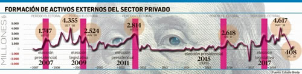

Real Chubut - Agencia de Noticias


¿Se adelanta la dolarización clave esperada para julio?

Tanto el Gobierno como el mercado aventuraban, meses atrás, que el contraataque cambiario se intensificaría en el tercer trimestre. Sin embargo, este particular año electoral tiene vida propia.
Apenas la cotización del dólar coqueteó la semana pasada con el canal interior de la zona de no intervención cambiaria (ZNI) se encendieron las alarmas. En unos pocos saltos el billete trepó a $43,50, muy cerca del promedio de la ZNI fijada por el BCRA, que es, implícitamente, la "zona de confort" para el Gobierno y el Fondo. El nivel alcanzado por el tipo de cambio real (el viernes el dólar bajó a $42,30 tras haber sido enlazado por el BCRA con una fuerte suba de las tasas) es comparable con el del último bimestre de 2018. ¿Son alarmas tempranas o comenzó algo más?
En realidad, las alarmas se prendieron en enero pasado. Allí el público en general le recordó, al Gobierno y al mercado, que cuando hay pesos compran dólares para atesorar. Y eso se dio cuando aún restaban seis meses para las PASO y ocho para la primera vuelta electoral. Sin embargo, la gente que tuvo un excedente para ahorrar, decidió empezar a protegerse, o sea, a dolarizarse. A economistas e historiadores no les resulta extraño que ello ocurra en un año electoral. Más aún en este que tiene varias peculiaridades. Lo cierto es que en enero la formación de activos externos (atesoramiento) rozó los u$s2.000 millones, donde sólo de billetes fueron casi u$s1.300 millones. Además el gasto en turismo se duplicó. Según algunos sondeos privados, los bancos dicen que en febrero se atenuó la demanda para atesoramiento (el dato oficial se conocerá recién en 15 días).
Quienes monitorean el mercado cambiario, casi diariamente, vislumbran ya sobresaltos, más allá de la aparente llegada de una "supercosecha", porque además la incertidumbre no es buena compañera para esperar una rápida liquidación de exportaciones, ya que no debe soslayarse que los productores "atesoran" en silobolsas como medio de protección. La experiencia histórica reciente muestra que en los períodos preelectorales la demanda de dólares para atesoramiento aumenta fuerte. Según el Estudio Broda, el promedio mensual de atesoramiento, sin tomar los períodos electorales, se ubica entre u$s800 y u$s1.000 millones. Pero mirando el espejo retrovisor se observa que se llega a picos de más de u$s4.600 millones, pero no baja de los u$s2.900 millones en pleno período electoral.
Tanto el mercado como el Gobierno esperaban que los meses críticos serían julio, agosto y septiembre. Allí debería darse la mayor presión de la demanda por atesoramiento. Pero cuando los ahorristas se ponen nerviosos, hasta los más sofisticados modelos matemáticos pueden fallar. Claro que aquellas familias que, pese a todo, aún tienen márgenes para ahorrar saben que, sobre todo en años como este, el dólar de hoy es más barato que el de mañana. Mientras que a las familias con ninguna capacidad de ahorro sólo les queda protegerse adelantando consumos, para no correr tan detrás al tren del dólar y la inflación. Vale señalar que el dólar es un activo particular en la Argentina, ya que en algunos momentos ocurre que sube de precio y aumenta su demanda al contrario del resto de los bienes. Además, cada día, el potencial retorno de la figura del cepo, bajo diversas modalidades, se hace más evidente. Porque referentes del kirchnerismo, si triunfan, lo dan por hecho, mientras que desde el oficialismo saben que tras el pecado original, si ganan, tampoco tendrán ni lluvia de inversiones ni tanto endeudamiento como para seguir con la plena libertad de atesorar. La gente lo entiende, y si puede, se anticipa.
Con este panorama y el combo armado por el Gobierno y la oposición, no debe extrañar que el dólar siga dominando la escena diaria, más allá de que en alguna jornada ceda el centro de la escena.
Dos temas son claves de ahora en más: conocer lo que pasará con las bandas cambiarias y si el FMI terminará cediendo en el clamor oficial por usar los dólares excedentes. Sobre el primer tema hay consenso de que no sería, lo mejor, sacarlas o cambiarlas. Pero lo más relevante es el destino de los u$s8.000 a u$s9.000 millones excedentes, estimados por el mercado que tiene el Tesoro. Esa es la verdadera pulseada que hay con el FMI, que como adelantara este diario el 24 de enero pasado, comenzó apenas empezó el año. El tema no es menor y gestó una verdadera interna en el staff del Fondo. Por un lado, la posición ortodoxa del FMI es que se guarde ese excedente para 2019/20 mientras que el Gobierno peregrina para hacerle entender que los argentinos "toman decisiones" en dólares y por ende quiere poder vender esos dólares "para afrontar los vencimientos de deuda en pesos" y así estar en mejores condiciones para la embestida de los "atesoradores" y quienes huyan del peso como es tradicional en todo año electoral. Esta definición es la que aguarda conocer el mercado, cuanto antes, sobre todo por si se acelera la dolarización o no llegan tantos dólares de la cosecha. Se estima que antes de fin de mes el Fondo prometió una definición al respecto. En el mercado sabe que si se tarda en saber qué se falló finalmente, los sojeros pueden postergar sus liquidaciones. Y todo se torna un círculo vicioso. También esperan que le den más vía libre al BCRA para intervenir en el mercado de futuros. Hay además otra miniinterna en el seno del FMI, sobre las bandas: es que se plantean qué hacer si las expectativas inflacionarias no ceden cómo seguir con la ZNI. Unos quieren seguir con el ajuste de, por ejemplo, 2% de los límites y otros pugnan porque no se atrase el tipo de cambio, porque entienden que ya se perdió la ventaja competitiva, o sea, el colchón del 15% con el que se arrancó el programa.
No hay margen para relajarse: el desafío de renovar Letes y Lecap sigue vigente y ya vienen los vencimientos más fuertes.
Fuente: Ambito